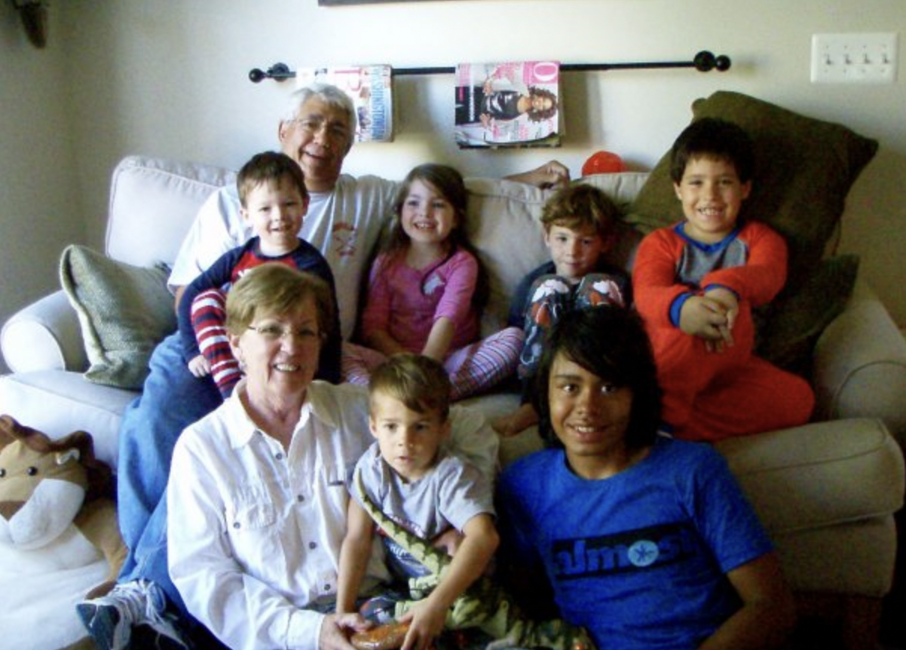
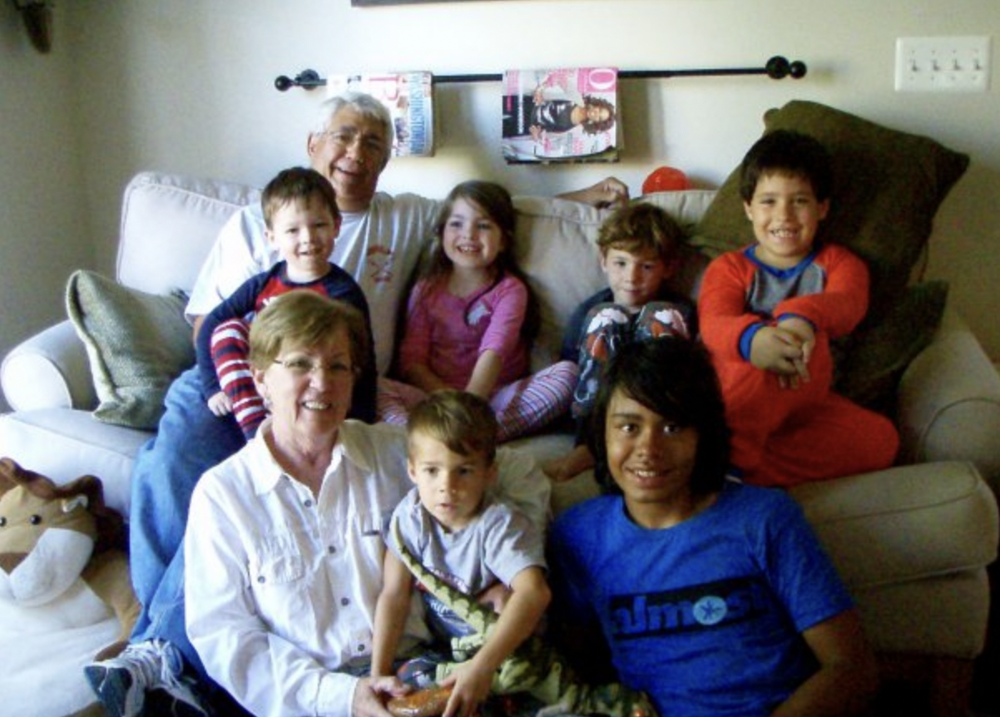

wii menu
video games were how my cousins and i bonded. even today when we get together with family we play the same games we played a decade ago. (middle bottom pic is us this past thanksgiving)

 

video games were how my cousins and i bonded. even today when we get together with family we play the same games we played a decade ago. (middle bottom pic is us this past thanksgiving)